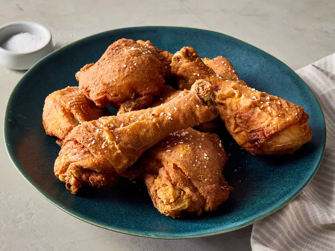

Description
This Southern fried chicken recipe is originally from Alabama and has been passed down for generations.
Ingredients
- 1 cup all-purpose flour
- 2 teaspoons paprika
- 1 teaspoon salt
- 1 teaspoon ground black pepper
- 1 teaspoon garlic powder
- 1 teaspoon onion powder
- 1/2 teaspoon cayenne pepper (Optional)
- 1 (3 pound) whole chicken, cut into pieces
- vegetable oil for frying
Steps
- Gather all ingredients.
- Combine flour, paprika, salt, pepper, garlic powder, onion powder, and cayenne in a large resealable plastic bag. Add chicken pieces to the bag and toss to coat.
- Place floured chicken pieces on a wire rack set over a baking sheet, reserving remaining flour in bag. Chill chicken in the refrigerator 45 minutes or until flour looks pasty.
- Meanwhile, add 1 ½ inches of oil to a deep fryer or 5-quart heavy pot. Heat oil to 375 degrees F (190 degrees C).
- Place chicken pieces back into the bag of flour and toss once more to coat. This will help the coating cling nicely to the chicken pieces for crispier results. Preheat the oven to 200 degrees F (93 degrees C).
- Lower chicken pieces, 2 to 3 pieces at a time, carefully into the hot oil. Fry until golden, turning once, about 8 to 12 minutes. An instant-read thermometer inserted near the bone should read 165 degrees F (74 degrees C).
- Transfer to a paper towel-lined plate to drain. Keep fried chicken warm in preheated oven while you fry remaining chicken.
- Serve hot and enjoy!